WotLK Warmane Icecrown - TSM (TradeSkill Master) Part 1
Download, install and configure TSM, then scan and buy on the Auction House.
What is TSM?
TSM, or TradeSkillMaster, is a World of Warcraft addon that automates and streamlines Auction House, crafting, and inventory management.
It lets you:
-
Auto-buy materials up to a set amount
-
Post auctions in batches with custom pricing
-
Track crafting costs and profit
-
Organize items into groups for faster shopping and posting
-
Create custom shopping strings to instantly search for materials
TSM is mainly used by players who want faster crafting, easier profession management, and efficient goldmaking.
Download
You can get the addon from this link: https://felbite.com/addon/3303-tsm/
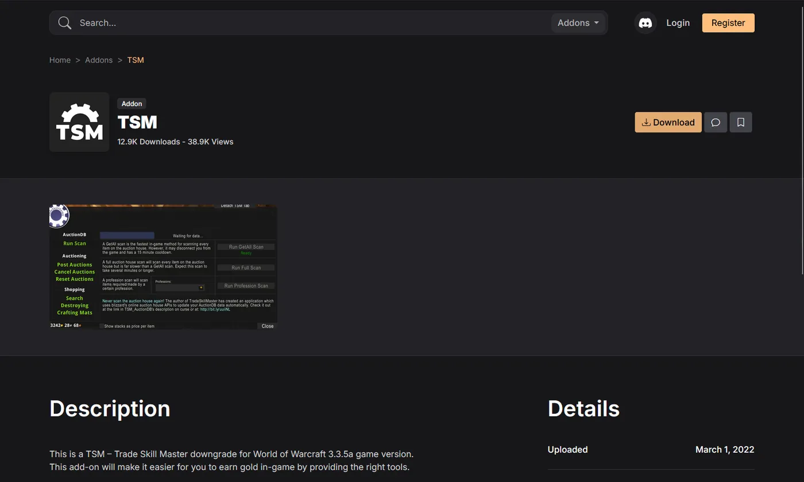
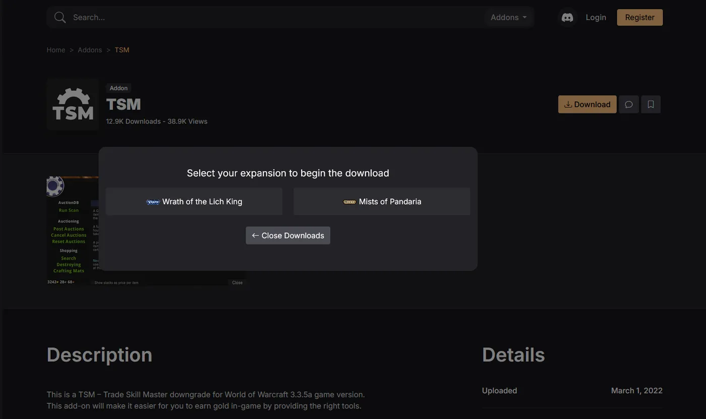
Installation
-
Go to your “World of Warcraft” for Wrath of the Lich King expansion folder.
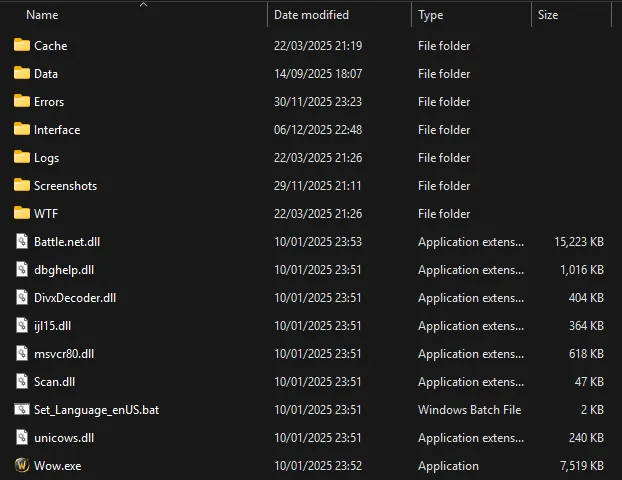
-
Enter the “Interface” folder.
-
Enter the “AddOns” folder.
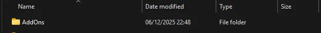
-
Open your downloaded file “felbite.com-tradeskillmaster-wotlk-3.3.5.zip” and extract it or copy its content inside the “AddOns” folder.
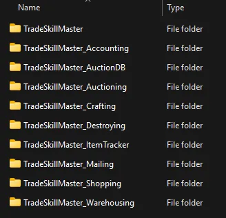
TSM Modules
| Module Folder | What It Does |
|---|---|
| TradeSkillMaster | Core addon framework; required for all other modules. |
| TradeSkillMaster_Accounting | Tracks your gold income/expenses, sales, purchases, and detailed profit history. |
| TradeSkillMaster_AuctionDB | Stores Auction House scan data: market values, historical prices, region data. |
| TradeSkillMaster_Auctioning | Automates posting auctions using pricing rules, undercut settings, and groups. |
| TradeSkillMaster_Crafting | Calculates crafting costs, profit margins, and optimal crafting queues. |
| TradeSkillMaster_Destroying | Automates Disenchanting, Milling, and Prospecting; shows profit per destroy. |
| TradeSkillMaster_ItemTracker | Tracks items across all your characters, bags, bank, guild bank. |
| TradeSkillMaster_Mailing | Automates sending mail to alts; quick-send for grouped items. |
| TradeSkillMaster_Shopping | Lets you search and buy items using shopping lists / strings; fast material buying. |
| TradeSkillMaster_Warehousing | Automates moving items between bags, bank, and guild bank for inventory organization. |
Configuration
After you log in, you press the “AddOns” button and you’ll find that all the modules are checked by default. You can uncheck modules if you don’t need them, if you uncheck “TradeSkillMaster”, then the rest of the modules won’t run.
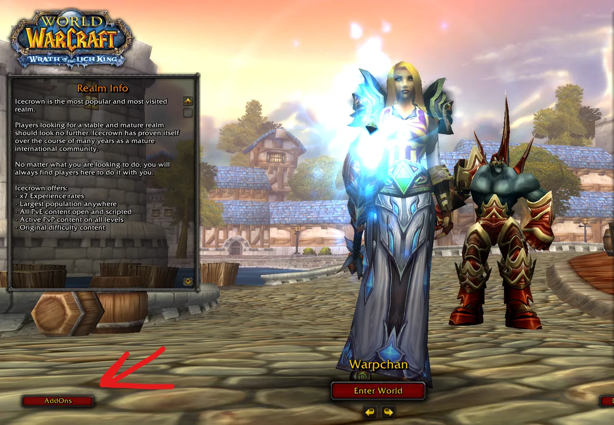
Press the “AddOns” button at the down left corner.
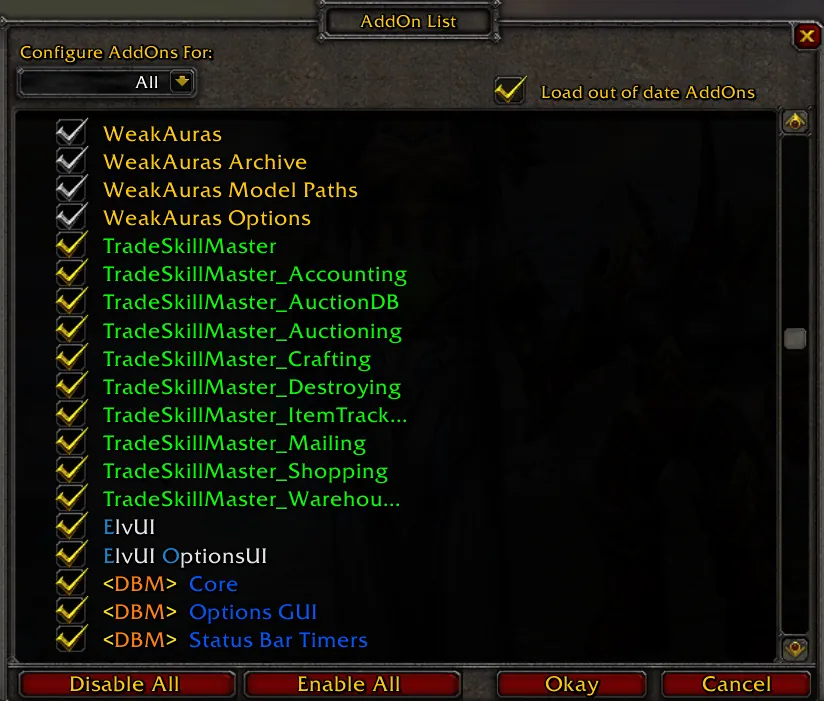
TSM and its modules.
How to Access TSM Menu?
-
Type “/tsm” in the chat.
-
Press this icon on your minimap border.
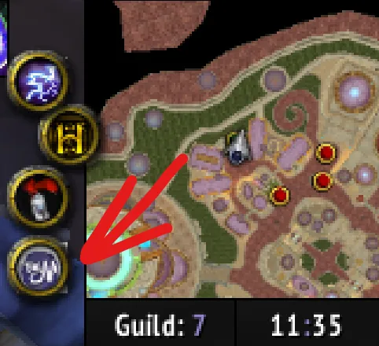
TSM Interface
-
This is the configuration interface:
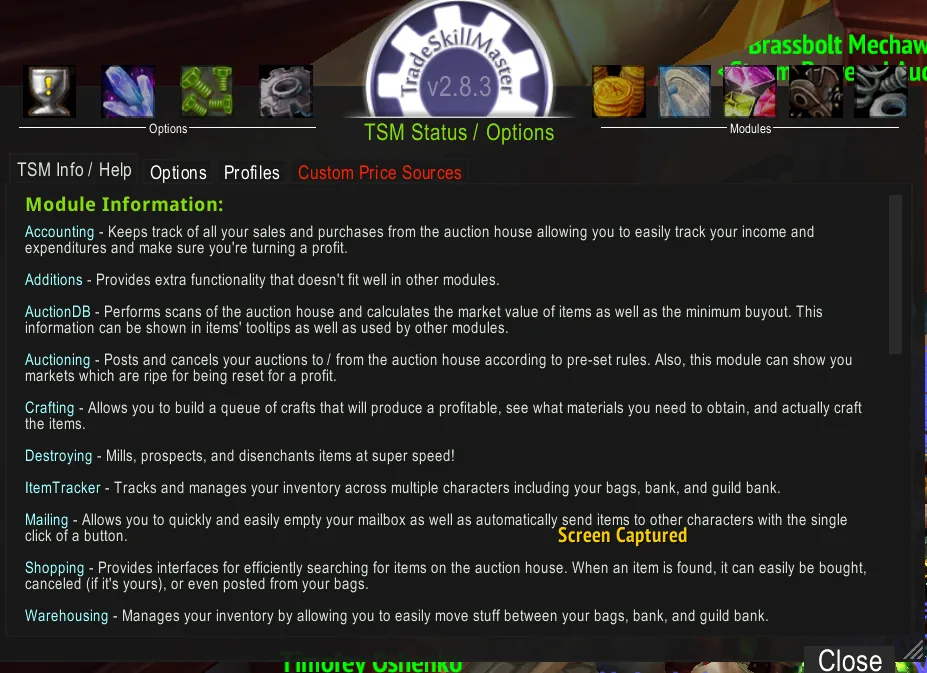
You can control the space it takes by dragging the bottom right corner. If you have disabled some modules, they will disappear from the 9 icon tabs located on the top border. -
This is the interface when you open the Auction House:
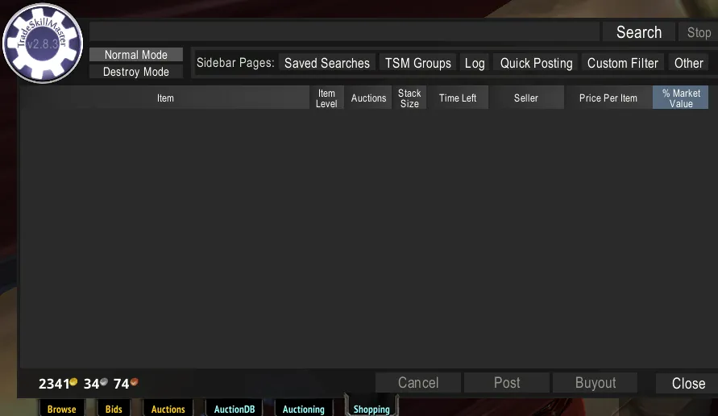
It adds 3 new tabs on the bottom corner: AuctionDB, Auctioning and Shopping.
How to use TSM?
TSM can feel overwhelming at first, especially if you’ve never used an Auction House addon before. But once you understand the basics, everything becomes much easier.
Let’s start with: Auction House scanning.
Auction House Scanning
TSM relies on AuctionDB data to function - this includes things like:
-
Current market prices
-
Historical prices
-
Region/global averages
-
Minimum/maximum seen prices
-
Crafting cost calculations
To get this pricing data, you need to scan the Auction House regularly.
How to Perform a Scan
Once you open the Auction House interface, click on the AuctionDB tab in the TSM window.
For most situations, you’ll only need the “Run GetAll
Scan” option.
This is the fastest type of scan TSM offers - it reads every auction
on the server in just a few seconds and updates all of your pricing
data at once.
If your server allows GetAll scans (most do), this is the preferred method because it:
-
Refreshes all Auction House prices
-
Updates crafting profits
-
Makes shopping and posting more accurate
-
Saves a huge amount of time compared to full scans
Just press Run GetAll Scan, wait a moment for TSM to retrieve all the data, and you’re good to go.
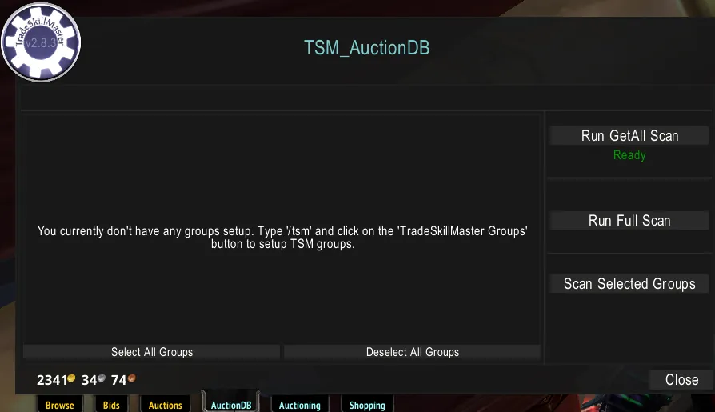
How to buy
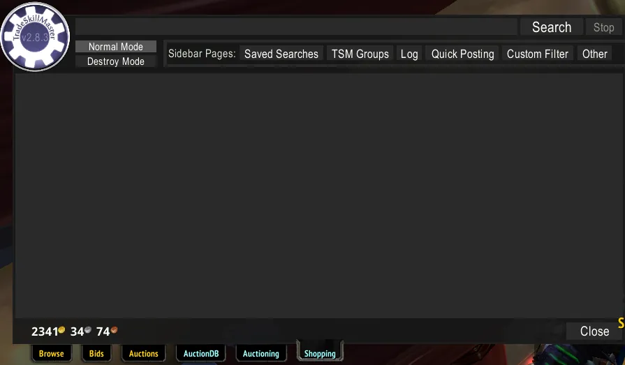
To purchase items quickly and efficiently with TSM, follow these steps:
-
Open the Shopping tab in the Auction House.
-
Type the name of the item you want into the search box at the top.
Press Enter or click Search. -
Wait for the results to load.
-
If many different items show up, sort by % Market Value to filter out overpriced listings.
-
Check the stack size to make sure you’re buying the amount you want.
-
Check the price per item to confirm it’s a good deal.
-
Click Buyout and confirm the purchase - or simply Alt + Click the item to buy it instantly.
-
You can use modifiers to control how TSM searches:
/exact
Use this when you want TSM to search only that specific
item and ignore similar items.
Example: Silk Cloth/exact
Without /exact, a search for Silk Cloth would also match items like:
-
Bolt of Embersilk Cloth
-
Bolt of Silk Cloth
-
Embersilk Cloth
-
Silk Cloth
Adding /exact ensures only Silk Cloth appears in the results.
/x
Use this to tell TSM how many you want to buy.
Example: Infinite Dust/x200
TSM will stop buying once you reach 200 Infinite
Dust.
This is very useful when you need to buy a list of materials for profession leveling.